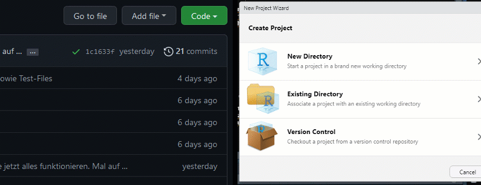
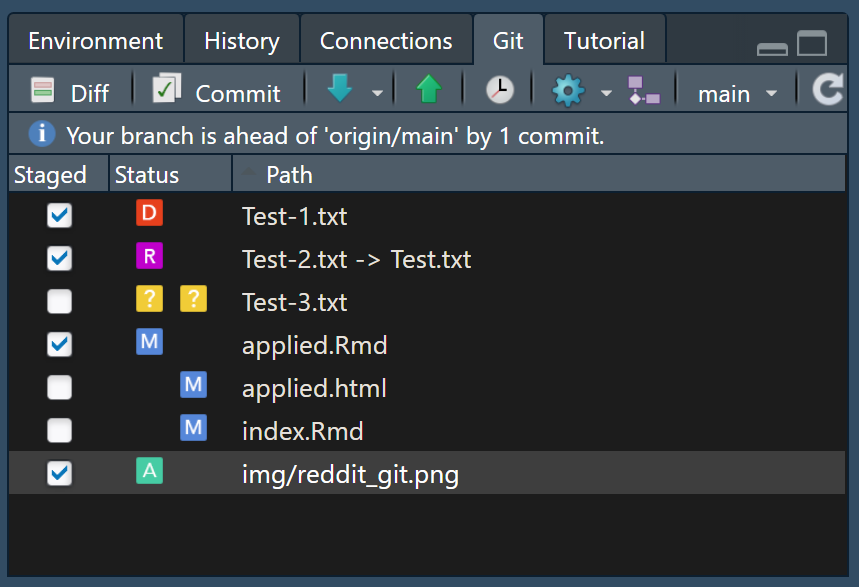

Using Git(Hub) in RStudio
This page contains …
… a how-to of using Git and GitHub as version controls from inside RStudio, as basically everything important is built into it already. If you’ve opted to use a desktop client instead, most of the core concepts and workflows should still be relevant for you, although the steps to achieve them might vary between applications. I’ll also discuss some more of Git’s features like branches and modifying other people’s code.
Starting a project
To have Git integration work from inside RStudio, it is strictly necessary to work inside an RStudio project rather than just a loose collection of code files scattered around your machine. This is because RStudio seems to treat the .Rproj file as an anchor point to build the file management around. While there are many ways to start a project, I want to highlight two different ways of doing things - although both boil down to the same method in the end.
New project that started on GitHub
This in my view is the cleanest way of organizing version control, as much of the setup headaches get handled automatically for you:
Go on GitHub and press the nice
+button at the top to create a new repositoryOpen your newly created repository and press the green
Codebutton at the top. Copy the web address displayed hereOpen RStudio, start a new project (
File -> New Project), selectVersion Control -> Gitand enter the link you copied into theRepository URLfield.
Side Note: To keep things organized, I highly recommend selecting a dedicated folder for coding projects on your machine: If you input this folder at Create Project as subdirectory of, RStudio will remember this and automatically select it the next time you generate a new project.

The big advantage of doing things this way is that the selected GitHub repository will be seen as the origin without needing manual setup. In this way, the project should immediately be usable, without having to worry about manually pushing or pulling files. If there are already files in your chosen repository, these will also automatically be downloaded and made available locally.
Preexisting local project
Do you already have some old project lying around that you want to update and share and/or save on GitHub? Then this is the step for you! The core idea in this step is the same as before: We follow the instructions above to generate an (empty) repository and generate it locally as a new project. The trick with this approach is that you can now go ahead and - after opening the project’s folder in a file manager of your choice - simply copy all your old files into this new folder. RStudio’s Git integration will recognize these files as new to the project, and you will be able to work with them as if you had just created them inside the project.
Working with Git in RStudio
Now that you’ve opened your Git-synced project in RStudio, you might have already noticed something new: The Environment tab (usually top right) features a new tab simply labeled Git. When working with Git in RStudio, this tab is where all the magic happens - and everything that you otherwise would have to execute manually via the aforementioned Unix-terminal. Don’t be scared, but I will now show you a graphic visualizing the basic working steps in Git that I stole from Reddit:

You should already know many of the areas mentioned in this image, although maybe not by this name: The remote branch is the repo saved on GitHub, while the working branch is the file structure on your current machine. The other layers in between are what makes Git so powerful for version control (and so irritating in the beginning). Here’s how it works on a basic level:
If you make changes to an R script (or image, word document, …) on your machine, only the locally saved copy changes in your
working tree- usually irreversibly. These changes are not yet recorded by Git, so you can always revert back to any of your previous checkpoints.However, if you are happy with the changes you made and want to sync them with your version control, you first have to tell Git which files you want to update - you have to
addthem to astaging area. This also means that you do not have to save every changed file every time - you can also just select one out of a bunch of changed files and ignore the others for now. However, keep in mind that you can’t select individual parts inside a file to update. You either update all changes to a file, or none!Now with all relevant changes added, it’s time to tell Git to
committhem and create a new checkpoint for you on yourlocal branch. As the name implies, this is still only a local change and not recorded on GitHub!If you now want to sync your GitHub repository, you simply have to
pushthe changes to GitHub. As the graphic shows, this only uses yourlocal branchas a source, so you have to go through all previous steps to be able to save your files.Going further, if you’ve made changes to your project from another machine (or someone else in your project updated some files), you can easily
pullthese changes from GitHub to yourworking treeso your code stays up-to-date and clean.
Side Note: While you should save often and therefore also commit your changes often in case of emergency, you don’t have to push your changes every time you update something. It can be entirely valid to collect multiple changes and push them all in one go, especially when you’re still toying around with something half-baked that doesn’t entirely work yet. Similarly, if you’re using some automation, pushing often might be a bad idea. For example, this web interface gets automatically generated from the files I provide in the associated repo. If I were to push every little change, it would constantly re-compile and re-deploy this website for every minor spelling mistake - which would be annoying, energy-inefficient and would probably make Microsoft reconsider keeping this functionality as a free feature.
Now, if you’ve already made some changes to your new R project, you might notice that things start to appear inside the git-tab un RStudio. Based on the type of change, you should see a coloured symbol appear in the “Status” column: ?(New file), A(dded), M(odified), D(eleted) and R(enamed) will probably be the ones you’ll encounter most frequently. This window is RStudio’s pendant to the staging area I just mentioned - here, files are being prepared for a git synchronization. What the command git add does in the image above can be achieved here by clicking the check box:

To commit your selected files, you simply have to click the aptly named “Commit” button, leave an informative commit message as to what you did and why (so you know what happened when you look back in a few weeks/months/years) in the now open window, and then press “Commit” there as well.
Congratulations! You now know how to use Git for version control! All that remains now is syncing your files with GitHub - something RStudio directly lets you know by complaining that your local branch is ahead of GitHub (here called origin/main) in it’s update history. To rectify this, simply press the green, upwards pointing arrow. In the opposite situation, where GitHub is further ahead than your local machine, RStudio would still complain, and you would pull by pressing the blue, downwards pointing arrow.
Repo-Branches, Forks, Merges
Mehr Kontrolle durch Branches
Standardmäßig verfügt ein gestartetes Repo über einen einzige, linear verlaufende Änderungsistorie (“Branch”). Es besteht jedoch immer die Möglichkeit, eine beliebige Reihe weiterer Branches zu einem bestehenden Projekt hinzuzufügen.
Die Gründe für das Erstellen eines Branches sind dabei meist praktischer Natur: So lassen sich in diesen Branches Lösungen für aufgetretene Bugs testen und neue Features testen, ohne dass die Commit-Historie des Haupt-Branches mit zu Testzwecken vorgenommenen Änderungen überflutet wird.
Ich nutze für dieses Projekt auch Branches, aber aus einem anderen Grund: Dieses Projekt ist über GitHub Pages auch als Webseite verfügbar (Hallo (: ). GitHub erstellt dabei jedes Mal alle Projekt-Webseiten von Grundauf neu, wenn eine Veränderung in den “main”-Branch des Projektes gepusht wird. Da ich aus Gewohnheit immer sofort pushe, wenn ich committe, würde ich beim Arbeiten im Main-Branch somit alle halbe Stunde die Neugenerierung der Webseiten anregen. Um dies zu verhindern, schreibe ich meine Änderungen und Überarbeitungen in einem anderen Branch (der als “indev” auf der Repo-Seite einsehbar ist), und merge diesen Branch dann in den “main”-Branch sobald ich mit meinen Änderungen zufrieden bin.
Neue Branches können dabei in RStudio ebenfalls über das Git-Fenster erstellt werden. Zusätzlich lässt sich hier einfach zwischen den verfügbaren Branches hin- und herwechseln.
Was das Mergen von Branches angeht, sind jedoch Nutzer von Desktop-Clients im Vorteil. Während diese direkt aus ihrem Client heraus einen erstellten Branch in einen anderen mergen können, müssen RStudio-Nutzer dies über den Pull request-Knopf auf der Seite ihres GitHub-Repos durchführen.
Forks: This is mine now
Wie ein kurzes Scrollen durch die Explore-Seite auf GitHub zeigt, existiert eine große Vielfalt bereits vollständiger (oder teilweise entwickelter und inzwischen verlassener) Softwares, die auf GitHub gehostet werden.
Tatsächlich ist es so, dass sich zu vielen Problemen bereits Software-Lösungen anderer GitHub-Nutzer finden, die mit leichten Abwandlungen für eigene Projekte genutzt werden können. Dies kann über Forks getan werden.
Forks sind prinzipiell wie Branches zu verstehen, nur dass der Ursprungs-Branch in einem anderen Repository zu finden ist. Für die Firefox-Engine Gecko finden sich beispielsweise beinahe zweitausend Forks von individuellen Nutzern, die ausgehend von dem vom Firefox-Team geschaffenen Grundgerüst eigene Veränderungen an der Engine vorgenommen haben, um beispielsweise die Nutzer-Privatsphäremöglichkeiten zu erweitern.
SOmit lassen sich beispielsweise vorhandene Tools anderer Forscher für den persönlichen Gebrauch mithilfe von Forks weiterentwickeln, oder eigener Code aus bestehenden Repositories für zukünftige Projekte nutzen. Die Besitzer des ursprünglichen Repositories können dabei ähnlich wie bei Branches jederzeit die Änderungen einer Fork in das Hauptprojekt mit aufnehmen (dies läuft ebenso wie merges über Pull requests). Somit bieten sich Forks auch an, um beispielsweise Bugfixes für Repos fremder Besitzer vorzuschlagen.
(Der request ist dabei, dass der Besitzer deine Veränderungen in den Hauptbranch pullt, um den Namen zu erklären.)
Was nun?
Du kennst nun die grundlegende Funktionsweise von Git und GitHub und weißt, wie du sie aus RStudio zur Versionskontrolle benutzen kannst.
DIe Nutzung von Git ermöglicht dir zusätzlich noch eine ganze Reihe weiterer Möglichkeiten. So kannst du beispielsweise mit mehreren anderen Nutzern an demselben Projekt arbeiten, und deine und ihre Commits einfach synchronisieren. Außerdem bietet Git dir die Möglichkeit, ein einzelnen Programm in mehreren branches zu entwickeln, sodass du beispielsweise eine stabile Version deines Codes öffentlich anderen Nutzern verfügbar machen kannst, während du in einem anderen Branch experimentell mit neuen Ideen und Inhalten experimentierst. Diese Branches lassen sich bei abgeschlossenem Experiment jederzeit miteinander zusammenführen, die genaue Durchführung dieser und anderer Nutzungsmethoden sprengt jedoch den Rahmen dieser kurzen Einführung.
Ich wünsche viel Erfolg in der Nutzung von Git und Happy Coding!
As before, if you’re still unsure about how things work or want to learn more about the possibilities Git and R offer, I recommend you look at: https://happygitwithr.com/index.html
Last modified: 2023-08-23 14:54, R version 4.3.1
Source data for this page can be found here.